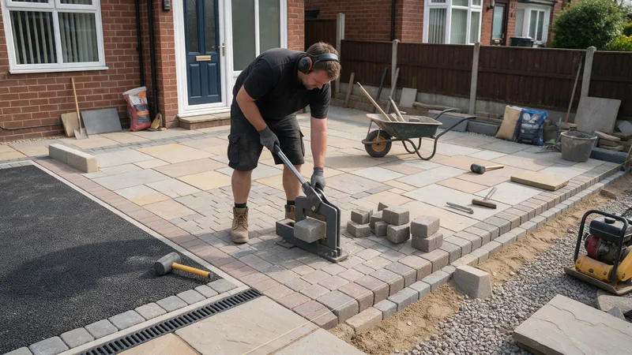
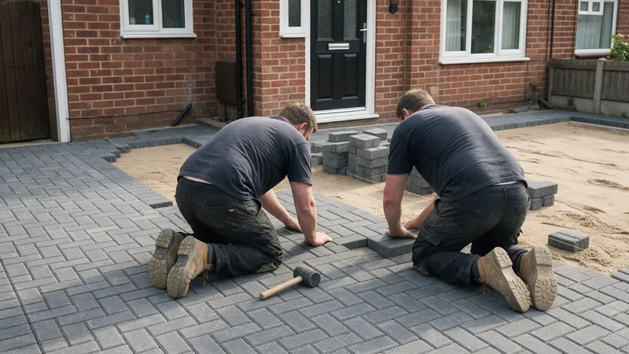

What you are actually paying for
Hold two quotes for the same drive side by side and the blocks will often be the same blocks. The difference is in the digging, the stone, the edges and the drainage, which is everything you cannot see once it is finished. That is why the cheapest quote for a block drive is nearly always the one where somebody has gone thinner underneath.
So a quote from us says how deep we are digging, what sub base is going in and in how many layers, where the edges are and how they are haunched, and what happens to the water. You can hold that against anybody else's and ask the same questions. If a quote does not say, that is the question to ask.
What a drive is made of
Patterns, borders and the dull decisions
Herringbone at forty five degrees is the usual choice for a drive, and not for looks. It locks together better than stretcher bond under a turning wheel, which is why car parks use it. Stretcher bond and basket weave suit paths and patios where nothing heavy turns.
Then the decisions people rush: the border course and where it runs, what happens at the garage threshold, where the manhole covers land and whether we can keep the cuts away from the front of the house. Cuts are unavoidable. Cuts in the middle of where you stand to unlock the door are avoidable, and it only costs some thinking on day one.
Repair before replace
A drive that has sunk in two patches, or that looks green and tired, is usually a repair and a wash rather than a new drive. Blocks lift and go back down, which is the quiet advantage they have over every other surface. We would rather lift a square metre, put the dip right and relay the same blocks than sell you the lot.
 Generated photo
Generated photoGenerated for this demo. Not a photograph of a real job.

Generated photoThe cuts get worked out before the last course, not after. Generated for this demo.
On the job
How this one usually goes.
- We dig it out and cart it awayTopsoil, the old surface, and anything soft underneath. The depth is set by what is down there and what will be driving on it, not by a standard figure.
- Edges go in firstThe edge course, haunched in concrete, right round. It is what stops the whole field of blocks creeping sideways and opening the joints up.
- Sub base, in layers, whacked downCrushed stone spread and compacted in layers rather than tipped in one go. One thick lift never compacts properly in the middle.
- Sand screeded, blocks laid to a lineA shallow sand bed screeded level, then blocks laid to a string line from a straight edge, with the cuts worked out before the last course rather than after.
- Whacked, jointed and sweptThe whole drive vibrated down, kiln dried sand brushed into the joints, vibrated again, swept off and the road brushed clean behind us.
A sample running order for this demo. Yours depends on the house and what comes out of the ground.
Questions
Asked about this job.
How long does a block paved drive take?
Three to five days for an ordinary front drive. Digging out and the sub base are the first two or three of those, and the blocks themselves are usually the last day and a bit. A drive that needs drainage or a crossing applying for takes longer, and that gets said before you agree anything.
Will the blocks sink?
Not if what is under them is right, and if they do it is almost never the blocks that failed. Sinking in the wheel tracks means a thin or poorly compacted sub base. Sinking at the edges means no edge restraint or a soft haunch. Both are build faults rather than block faults.
Can you match the blocks on my existing drive?
Often close, sometimes exactly, and we will be straight about which. Colours fade over ten years and some ranges stop being made. For a repair we lift the sound blocks and relay them in the visible area and put any new ones where they matter least, which beats a patch of bright new blocks in the middle.
Do I need to seal it?
No, and plenty of good drives are never sealed. Sealing can help keep oil out of a light coloured block and holds the joint sand in place, but it has to be done on a clean dry drive and redone every few years. Done badly, on a damp drive, it goes cloudy and looks worse than no seal at all. Leave it a winter first.
General trade knowledge written for this demo, not advice on your property.
Our work
Sample jobs like this.

Generated photoBlock paving going down in herringboneHorwich SampleGenerated photoCharcoal blocks, buff sett borderWesthoughton Sample Generated photoSub base in, nothing pretty yetLittle Lever Sample
Generated photoSub base in, nothing pretty yetLittle Lever SampleMade up samples with generated pictures. Tap one for the detail.
Also
The other things we do.
Tarmac and resin driveways
Tarmac where you want one quiet surface and a good edge. Resin bound where you want gravel that stays where you put it and lets water through.
More →Patios
Sandstone, porcelain or concrete flags on a full bed, falling away from the house, with the joints and the step down sorted before anybody sits on it.
More →Dropped kerbs, through the council
The crossing from the road on to your drive. The council decides whether you can have one and who may build it, so that part comes first.
More →Drainage for drives
Channel drains, soakaways, falls and permeable surfaces. Where the water goes is the question that decides most of a driveway job.
More →Driveway cleaning and repairs
Washing, re-sanding and sealing, sunken patches lifted and relaid, and the odd flag that rocks. Far more drives need this than need replacing.
More →Shall we come and look at the levels?
Tell us what is there now and your postcode. If something has sunk and somebody could trip on it, use the urgent line instead.